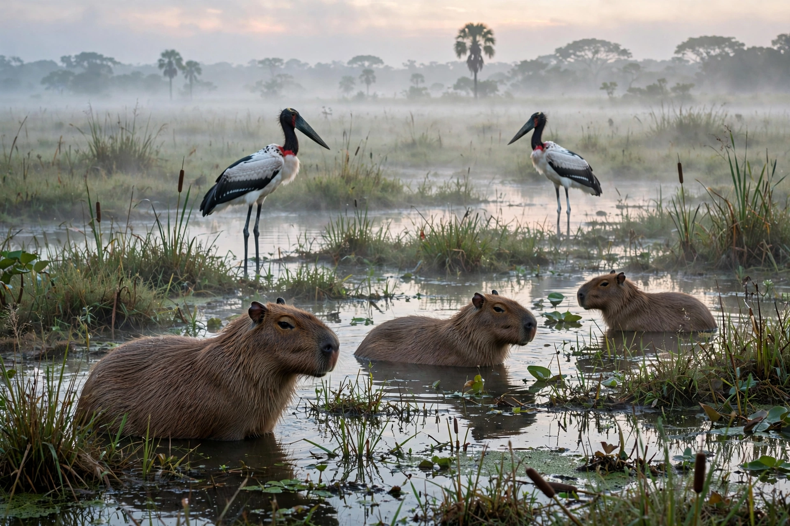

Mato Grosso
| Mato Grosso | |
 | |
| Country | Brazil |
|---|---|
| Capital & largest city | Cuiabá |
| Area | c. 903,207 km² (3rd largest state) |
| Population | c. 3.66 million (2022 census) |
| Abbreviation | MT |
Mato Grosso ("thick bush" in Portuguese) is a landlocked state in Brazil's Central-West Region, bordering Bolivia to the west and the states of Rondônia, Amazonas, Pará, Tocantins, Goiás, and Mato Grosso do Sul. It is Brazil's third-largest state by area.
Geography
The state spans three major ecosystems: Amazon rainforest in the north, the Cerrado savanna plateau of the centre (including the Chapada dos Guimarães), and the Pantanal, the world's largest tropical wetland, in the south-west. Major rivers include the Cuiabá, the Tocantins headwaters to the east, and the Paraguay River system.
History
European penetration followed the bandeirante gold discoveries around Cuiabá in 1719. The southern portion of the old state was split off as Mato Grosso do Sul in 1977 (effective 1979). Rapid agricultural frontier expansion from the 1970s onwards turned the state into an agricultural powerhouse.
Economy
Mato Grosso is Brazil's leading producer of soybeans, maize, cotton, and beef cattle, and a focus of debate over deforestation in the Amazon and Cerrado. Cuiabá was a host city of the 2014 FIFA World Cup.
See also
Goiás · Tocantins · List of state capitals in Brazil
Recreated from memory as a standalone page.